Valheim-Gegenstandsliste
Wo gibt es das, in welchem Biom und mit welchem Werkzeug? Diese Liste umfasst 864 Gegenstände – Materialien, Nahrung, Waffen, Rüstungen und Trophäen. Zu jedem Gegenstand steht, woher er kommt (Bäume, Erzvorkommen, Kreaturen, Truhen, Händler), welches Werkzeug du brauchst, das Rezept und wofür er verwendet wird. Alle Angaben sind direkt aus den Spieldateien ausgelesen (Version 1.0.21).
Kein Gegenstand gefunden.
Materialien
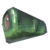
Asksvin-Schweif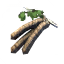
Birkensamen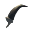
Fenris-Klaue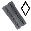
Gussform: Blitzschlag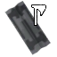
Gussform: Nord-Axt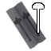
Gussform: Nord-Hammer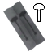
Gussform: Nord-Streitkolben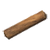
Kernholz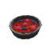
Metmischung: Gesund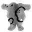
Robbenpelz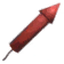
Rotes Feuerwerk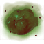
Toter Brei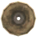
Wetzstein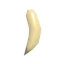
Wolfszahn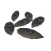
ZwiebelsamenNahrung & Tränke
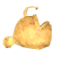
Fisch und Brot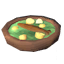
Fischsuppe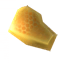
Honig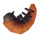
Leuchtende Larve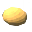
PoteitrWaffen, Werkzeuge & Munition
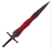
Blutender Nidhögg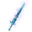
Frostfeuer-Dolch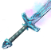
Frostfeuer-Großschwert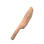
Holzmesser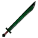
Schwarzmetall-Schwert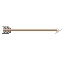
Silberpfeil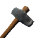
Steinaxt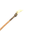
WolfszahnspeerRüstungen, Schilde & Zubehör
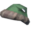
Extravagante Kappe (grün)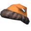
Extravagante Kappe (orange)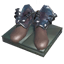
Flammenkern-Beinschienen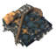
Gepolsterter Brustpanzer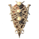
Knochenturmschild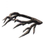
Krone der Wurzeln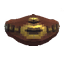
Megingiard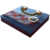
Perlenkleid (blau)Trophäen
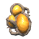
Writhan-TrophäeFische & Sonstiges
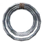
Fassreifen